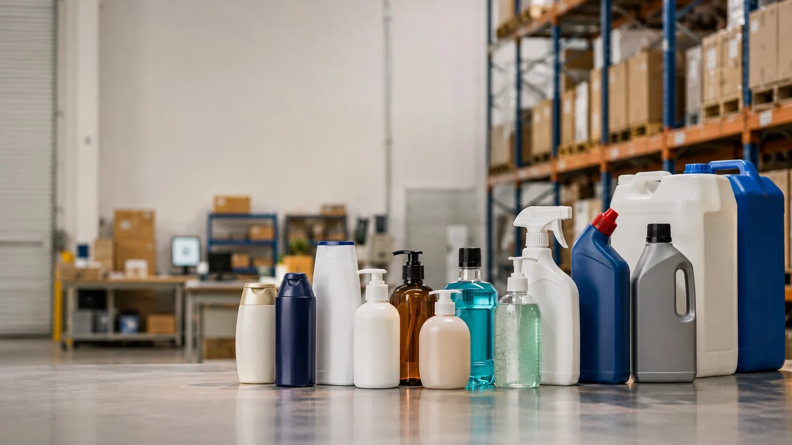
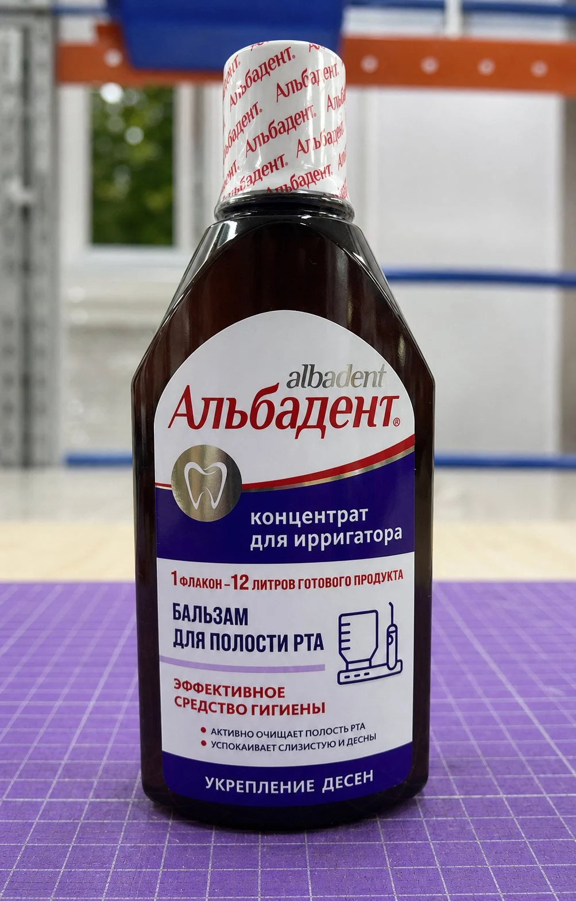
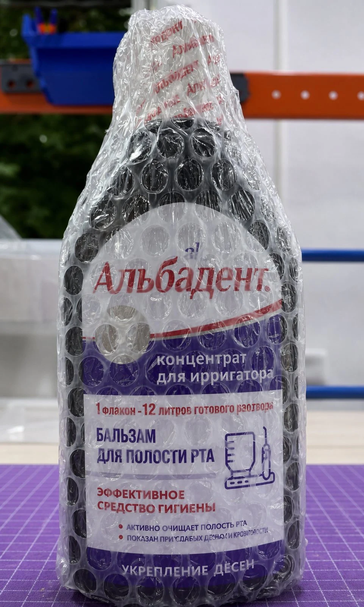
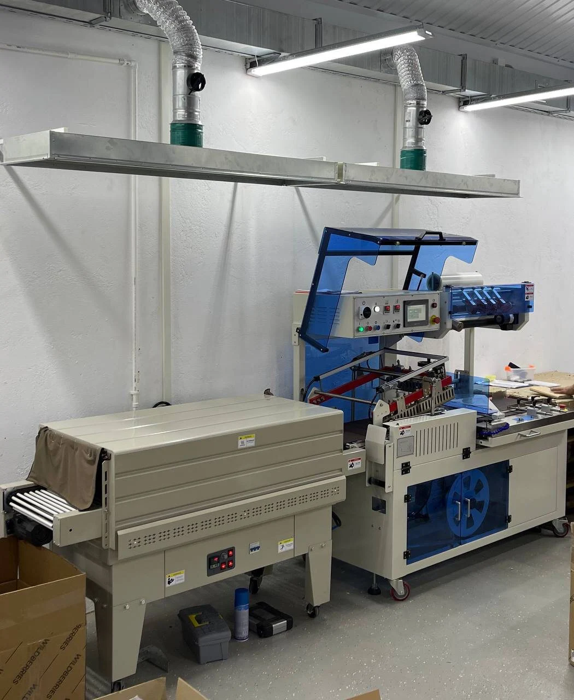
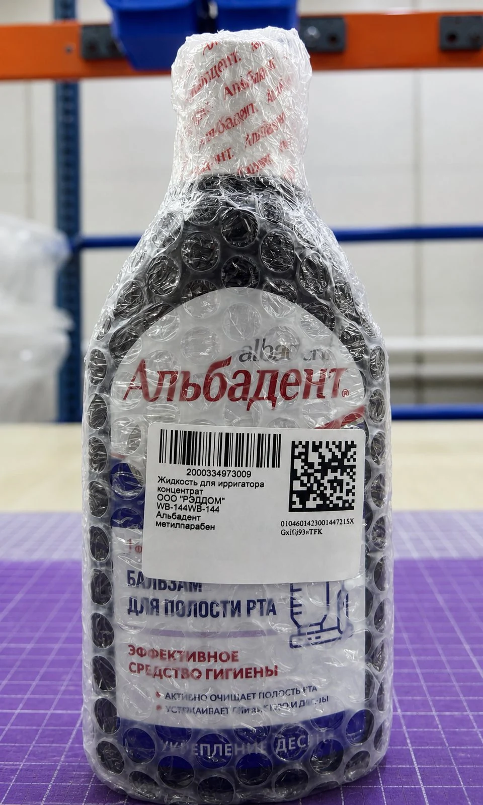
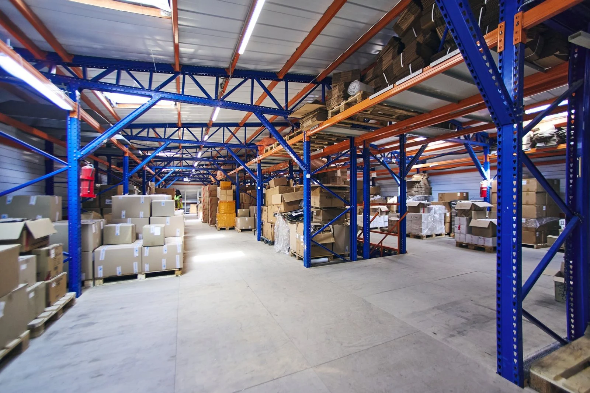

Фулфилмент для жидких товаров на Ozon, Wildberries и Яндекс Маркете
Преп-Центр принимает и готовит к маркетплейсам товары во флаконах, бутылках, банках, тубах и другой таре с жидким содержимым.
Проверяем состояние товара и упаковки, сортируем партию, упаковываем в ВПП (пупырку) и термоусадочную пленку, выполняем печать и наклейку этикеток маркетплейсов. После подготовки можем сформировать поставку по FBO или обрабатывать заказы по FBS.
Работаем с партиями косметики, шампуней и гелей, бытовой, автомобильной и строительной химии и другими подходящими жидкими товарами.
- До 20 000 единиц за 12 часов
- Автоматические линии ВПП и термоусадки
- FBO и FBS
- Проверка товара до массовой упаковки

Какие жидкие товары мы готовим к маркетплейсам
Шампуни и гели
Принимаем партии шампуней, гелей для душа, средств для волос и другой продукции во флаконах. Проверяем тару, крышки и внешний вид, подбираем защитную упаковку и маркировку.
Фулфилмент для шампуней и гелейБытовая химия
Готовим к маркетплейсам моющие и чистящие средства и другую подходящую бытовую химию. До приемки согласовываем состав, класс опасности и условия хранения.
Фулфилмент для бытовой химииКосметика
Работаем с жидкой косметикой, уходовыми средствами и продукцией в банках, тубах и флаконах.
Фулфилмент косметикиАвтохимия и автокосметика
Проверяем канистры, бутылки, крышки и пломбы, защищаем товар от повреждений и готовим поставки.
Фулфилмент автохимииСтроительная химия
Обрабатываем подходящие грунтовки, очистители, клеи и защитные составы в герметичной заводской таре.
Фулфилмент строительной химииЧто особенно важно при работе с жидким товаром
Жидкое содержимое повышает требования к входному контролю, упаковке и размещению товара в транспортной таре. Одна проблемная единица может повредить соседний товар и всю поставку.
При подготовке партии учитываем основные риски:
- нарушение герметичности заводской тары;
- повреждение крышки, дозатора или помпы;
- трещины и деформация флакона, банки, тубы или канистры;
- загрязнение соседнего товара при протечке;
- удары и трение при хранении и перевозке;
- этикетка или код маркировки, закрытые защитной упаковкой.
Поэтому схема работы согласовывается до массовой обработки. Для нового формата тары при необходимости готовим тестовый образец.


Как проверяем жидкие товары при приемке
Объем контроля фиксируем в ТЗ до поступления партии. Проверка может включать следующие операции.
Состояние тары
Осматриваем флаконы, бутылки, банки, тубы и канистры, отделяем единицы с видимыми трещинами и деформацией.
Крышки, помпы и дозаторы
Проверяем состояние зоны закрытия и защитных элементов. Если предусмотрено ТЗ, докручиваем крышки.
Следы протечки
Выявляем влажные, загрязненные и подозрительные единицы и изолируем их от основной партии.
Этикетки и маркировка
Проверяем наличие и состояние этикеток, исходных штрихкодов и кодов маркировки.
Количество и SKU
Пересчитываем товар, распределяем по артикулам и фиксируем расхождения.
В реальной партии строительной химии из 5 200 единиц на входном контроле обнаружили 9 единиц со следами протекания и 11 флаконов с деформированной тарой. Их исключили из поставки, а у 14 флаконов докрутили крышки.
Как защищаем жидкий товар при перевозке
Упаковку подбираем по материалу и форме тары, габаритам товара и рискам перевозки. Для некоторых товаров достаточно одного защитного слоя, другим требуется сочетание двух способов.
Упаковка в ВПП
Воздушно-пузырьковая пленка защищает товар от ударов и трения, амортизирует нагрузку внутри транспортного короба.
Подробнее об упаковке в ВППТермоусадочная упаковка
Пленка плотно облегает товар и может использоваться для фиксации крышки, комплекта или дополнительного внешнего слоя.
Подробнее о термоусадкеТермоусадка + ВПП
Два слоя применяют, когда товару одновременно нужны фиксация и защита от механических повреждений.
Термоусадка и ВПП
Маркировка после упаковки
После защитной упаковки код или этикетка должны оставаться доступными для сканирования. Поэтому при необходимости маркировку наносим на внешний слой.
В перечень операций могут входить:
- печать и нанесение этикеток маркетплейсов;
- штрихкоды и этикетки для конкретных SKU;
- печать, нанесение и учет готовых КИЗ «Честного знака»;
- проверка расположения и считываемости маркировки.
В партии из 3 186 ополаскивателей код каждой товарной единицы дублировали на внешний слой ВПП, чтобы сохранить доступность маркировки без вскрытия защитной упаковки.
Посмотреть кейс ополаскивателей
Как проходит работа с партией
- Приемка. Принимаем товар на склад, пересчитываем и распределяем по SKU.
- Контроль. Проводим согласованную проверку тары, крышек, дозаторов, пломб и внешнего вида.
- Сортировка. Отделяем проблемные единицы и фиксируем результат.
- Тест упаковки. Для нового формата при необходимости готовим образец и согласовываем схему.
- Упаковка. Защищаем товар в ВПП, термоусадочную пленку или последовательно в два слоя.
- Маркировка. Печатаем и наносим этикетки, штрихкоды и согласованные коды.
- Контроль готовой продукции. Проверяем упаковку и считываемость маркировки, укладываем товар в короба.
- Отгрузка. Формируем поставку по FBO или продолжаем хранение и обработку заказов по FBS.

Какие товары требуют предварительного согласования
Для химической продукции и товаров с особыми свойствами до приемки проверяем состав, класс опасности и требования к хранению.
- аэрозоли и товары под давлением;
- растворители и легковоспламеняющиеся жидкости;
- продукция с выраженным или стойким запахом;
- товары с особыми температурными требованиями;
- агрессивные химические составы;
- продукция, требующая специальных условий хранения или перевозки.
Направьте техническую информацию о продукции до отправки партии. Менеджер проверит возможность приемки и согласует условия.
Реальные кейсы с жидкими товарами
3 186 ополаскивателей за 2 дня
Проверили флаконы и заводскую упаковку, индивидуально упаковали товар в ВПП и продублировали код «Честного знака» на внешний защитный слой.
Посмотреть кейс5 180 единиц строительной химии за 3 дня
К обработке допустили 5 180 единиц. Товар прошел термоусадку и ВПП, после чего сформировали 4 поставки для Ozon и Wildberries.
Посмотреть кейсСтоимость упаковки жидких товаров
Цена зависит от объема единицы, способа упаковки и дополнительных операций.
| Операция | Цена |
|---|---|
| Упаковка в ВПП 70–110 мкм до 3 л | 10 ₽/л |
| Каждый литр ВПП свыше 3 л | 6 ₽/л |
| Автоматическая термоусадка до 1 л | 10 ₽/л |
| Каждый литр автоматической термоусадки свыше 1 л | 5 ₽/л |
| Ручная термоусадка крупного товара | 15 ₽/л |
Цены указаны без НДС. Приемка, контроль, сортировка, маркировка, короба, хранение и доставка рассчитываются по действующему прайсу.
FBO и FBS для жидких товаров
Поставка по FBO
После приемки, проверки, упаковки и маркировки можем сформировать поставку и отправить товар на склад Ozon, Wildberries или Яндекс Маркета.
Фулфилмент FBOОбработка по FBS
Храним остатки на складе Преп-Центра, получаем заказы, собираем и обрабатываем их, затем передаем на отгрузку.
Фулфилмент FBSЧастые вопросы
Как правильно упаковать жидкий товар для Ozon и Wildberries?
Сначала нужно проверить состояние тары и зоны закрытия флакона. Дальше упаковка выбирается по рискам конкретного товара. ВПП защищает от ударов и трения, термоусадка может использоваться для фиксации и дополнительного защитного слоя. Для части товаров применяют оба способа.
Какие жидкие товары принимает Преп-Центр?
Работаем с подходящей косметикой, шампунями и гелями, бытовой, автомобильной и строительной химией, средствами во флаконах и другими жидкими товарами. Для продукции с особыми свойствами заранее проверяем состав и требования к хранению.
Проверяете ли вы крышки и дозаторы?
Да, если такая проверка включена в согласованное ТЗ. Можно контролировать состояние крышек, помп, дозаторов, защитных пломб и других элементов упаковки.
Что происходит, если при приемке обнаружена протечка?
Проблемную единицу отделяем от основной партии. Дальнейшие действия зависят от состояния товара и заранее согласованного порядка работы с браком.
Что лучше для жидкого товара: ВПП или термоусадка?
ВПП (пупырка) лучше защищает от механических воздействий. Термоусадка плотно облегает товар и может использоваться для фиксации упаковки. Иногда оптимальна последовательная упаковка в 2 слоя.
Можно ли после упаковки нанести этикетку маркетплейса?
Да. Этикетки и штрихкоды можно нанести на внешний слой упаковки, чтобы они оставались видимыми и доступными для сканирования.
Вы работаете с «Честным знаком»?
Да, для маркируемых товаров выполняем согласованные операции с кодами. Например, в партии из 3 186 ополаскивателей код каждой единицы дублировали на внешний слой ВПП.
Можно ли сразу отправить подготовленный товар на маркетплейс?
Да. После упаковки и маркировки можем подготовить поставку по FBO на Ozon, Wildberries или Яндекс Маркет. Также Преп-Центр работает по FBS.
Как рассчитать стоимость фулфилмента жидкого товара?
Нужны фотографии товара и тары, размеры и объем одной единицы, количество, число SKU, тип продукции, маркетплейс и необходимые операции. Если состав товара требует отдельного согласования, приложите техническую информацию о продукции.
Рассчитаем подготовку вашей партии
Пришлите менеджеру:
- тип и наименование товара;
- фотографии товара и заводской тары;
- объем и размеры одной единицы;
- количество товара и число SKU;
- состав продукции, если это химический товар;
- маркетплейс и предполагаемую дату отгрузки.
Подберем операции и рассчитаем стоимость обработки партии.
Рассчитать стоимостьДля крупных партий жидких товаров отдельно рассчитываем срочную обработку 10 000+ единиц с учетом проверки тары и упаковки.